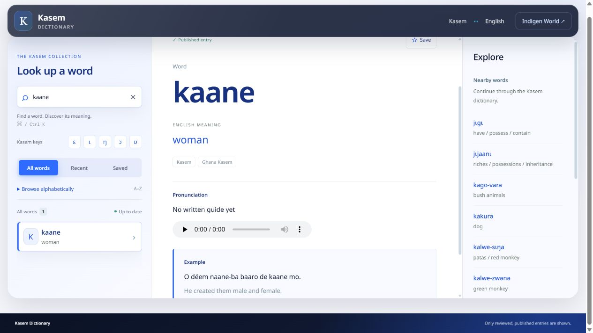

You can now listen to 18 more words in the Kasem Dictionary. Chinedum listened to a comparison of generated pronunciations, selected the takes that sounded right, and approved them for the dictionary. These selected recordings are now available on the live website.

Open the Kasem Dictionary, search for a word such as kaane, Nu or baaro, and use its pronunciation player. Read the meaning and dialect label alongside the spelling, then replay the audio when you want to practise.
This addition gives learners a sound to return to while studying individual entries. Families, teachers and people reconnecting with Kasem can listen together and discuss the pronunciation in their own variety.
The entries are Nu, di, kaane, baaro, tete, baŋa, sɔŋɔ, vɔɔro, wodiiru, kunkwolo, Zamese, belei, yanu, Deém, Vei, Véi, Wo and Ye. Written accents matter: Vei and Véi are separate entries.
Nineteen takes were approved across these 18 words. Vei has two approved takes; the current dictionary player presents one, while the second is retained with the entry for future use. Recordings marked as needing another take, or left unchecked, were not published.
The recordings were generated with Google Gemini speech models and reviewed by Chinedum. They are labelled as AI-generated in the entry’s source and attribution information. The original dictionary source credits remain in place.
This release covers the selected recordings for these entries. It does not establish that a model pronounces every Kasem word, sense or dialect correctly. Check the entry’s meaning and variety, and ask a Kasem speaker when a pronunciation is unfamiliar.
The audio was published on 27 September 2026. The live dictionary uses the new data through its existing player, so this website update does not require an app download. A further 40 words were prepared for listening review after this first release.